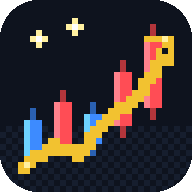

설치 없이, 지금 바로
가볍게 한 판.
JamesWorks는 브라우저에서 바로 열리는 작은 픽셀 아트 게임을 만듭니다. 휴대폰이든 컴퓨터든 링크 하나면 충분하고, 친구에게 공유하기도 쉬워요.
🎮 게임

📈 오르락내리락
500만 원 들고 가상의 주식과 코인을 사고팔아요. 뉴스와 찌라시에 눈치껏 반응하고, 번 돈으로 옷·펫·집·차를 꾸며 플렉스! 친구들과 그룹을 만들어 같은 시장에서 붙어볼 수도 있어요.
플레이하기 ▶🔧
다음 게임 준비 중
새로운 픽셀 게임을 만들고 있어요. 조금만 기다려 주세요!
✨ 이런 게임을 만들어요
⚡설치 없이 링크만 열면 바로 시작해요.
🎨손으로 찍은 듯한 픽셀 아트 그래픽.
👥친구에게 링크를 보내 함께 즐겨요.
🙋 JamesWorks 소개
JamesWorks는 혼자서 기획부터 그래픽, 개발까지 하는 작은 게임 스튜디오입니다. "짧게 들어와서 가볍게 즐기고, 친구랑 같이 웃을 수 있는 게임"을 목표로 만들고 있어요.
첫 작품 오르락내리락은 가상의 기업과 코인을 다루는 투자 시뮬레이션 게임입니다. 게임 속 시세와 뉴스는 모두 가상이며 실제 시장과 관계없고, 실제 돈을 쓰거나 벌 수 없습니다. 투자 조언이 아니라 순수한 놀이로 즐겨 주세요.
게임은 계속 업데이트됩니다. 버그 제보나 아이디어는 언제든 환영해요.